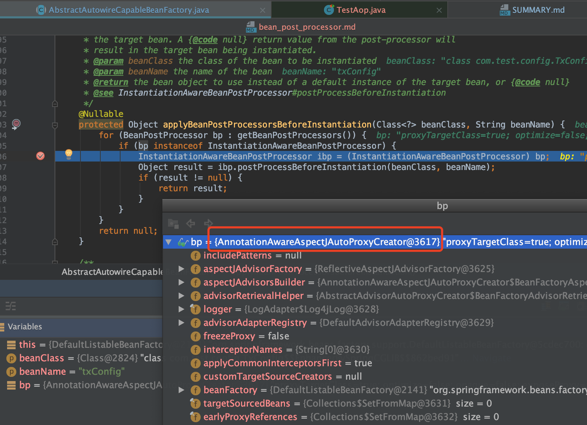
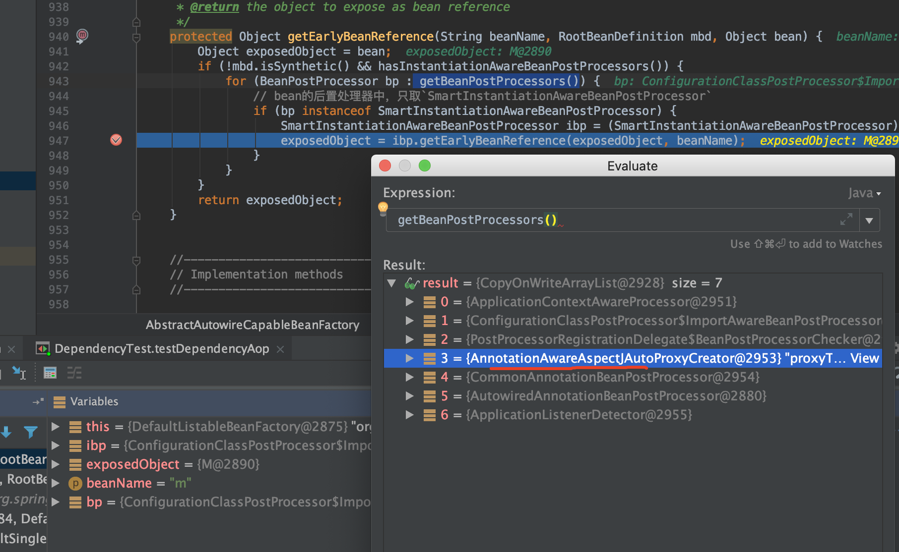
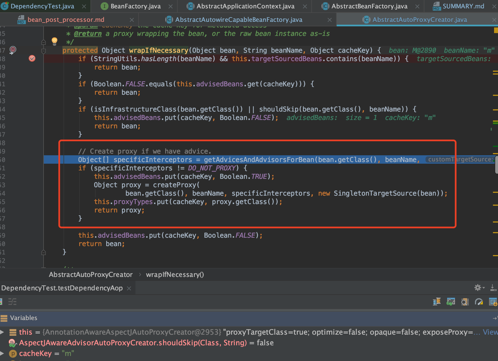
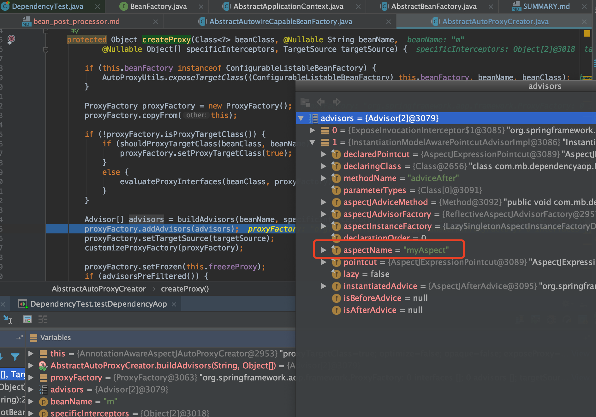
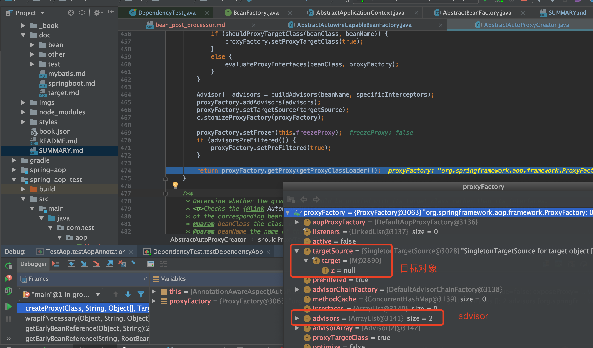

BeanPostProcessor
1.8.1. Customizing Beans by Using a BeanPostProcessor
官网介绍归纳
- BeanPostProcessor接口定义了两个回调方法，通过实现这两个方法可以提供自己的实例化以及依赖注入等逻辑。即干预Bean在Spring容器的实例化、配置、初始化逻辑
- 可以配置多个BeanPostProcessor，如果实现Ordered接口，还可以控制这些BeanPostProcessor执行的顺序
接口定义如下
public interface BeanPostProcessor {
/**
* Apply this BeanPostProcessor to the given new bean instance <i>before</i> any bean
* initialization callbacks (like InitializingBean's {@code afterPropertiesSet}
* or a custom init-method). The bean will already be populated with property values.
* The returned bean instance may be a wrapper around the original.
* <p>The default implementation returns the given {@code bean} as-is.
* @param bean the new bean instance
* @param beanName the name of the bean
* @return the bean instance to use, either the original or a wrapped one;
* if {@code null}, no subsequent BeanPostProcessors will be invoked
* @throws org.springframework.beans.BeansException in case of errors
* @see org.springframework.beans.factory.InitializingBean#afterPropertiesSet
*/
@Nullable
default Object postProcessBeforeInitialization(Object bean, String beanName) throws BeansException {
return bean;
}
/**
* Apply this BeanPostProcessor to the given new bean instance <i>after</i> any bean
* initialization callbacks (like InitializingBean's {@code afterPropertiesSet}
* or a custom init-method). The bean will already be populated with property values.
* The returned bean instance may be a wrapper around the original.
* <p>In case of a FactoryBean, this callback will be invoked for both the FactoryBean
* instance and the objects created by the FactoryBean (as of Spring 2.0). The
* post-processor can decide whether to apply to either the FactoryBean or created
* objects or both through corresponding {@code bean instanceof FactoryBean} checks.
* <p>This callback will also be invoked after a short-circuiting triggered by a
* {@link InstantiationAwareBeanPostProcessor#postProcessBeforeInstantiation} method,
* in contrast to all other BeanPostProcessor callbacks.
* <p>The default implementation returns the given {@code bean} as-is.
* @param bean the new bean instance
* @param beanName the name of the bean
* @return the bean instance to use, either the original or a wrapped one;
* if {@code null}, no subsequent BeanPostProcessors will be invoked
* @throws org.springframework.beans.BeansException in case of errors
* @see org.springframework.beans.factory.InitializingBean#afterPropertiesSet
* @see org.springframework.beans.factory.FactoryBean
*/
@Nullable
default Object postProcessAfterInitialization(Object bean, String beanName) throws BeansException {
return bean;
}
}
ApplicationContextAwareProcessor 类
ApplicationContextAwareProcessor是一个Spring内部工具，它实现了接口BeanPostProcessor，用于向实现了如下某种Aware接口的bean设置ApplicationContext中相应的属性:
- EnvironmentAware
- EmbeddedValueResolverAware
- ResourceLoaderAware
- ApplicationEventPublisherAware
- MessageSourceAware
- ApplicationContextAware
如果bean实现了以上接口中的某几个，那么这些接口方法调用的先后顺序就是上面接口排列的先后顺序。
InstantiationAwareBeanPostProcessor 接口
public interface InstantiationAwareBeanPostProcessor extends BeanPostProcessor {
// 在Bean实例化之前调用
@Nullable
default Object postProcessBeforeInstantiation(Class<?> beanClass, String beanName) throws BeansException {
return null;
}
// 在Bean实例化之后调用
default boolean postProcessAfterInstantiation(Object bean, String beanName) throws BeansException {
return true;
}
// 采用注解时，Spring通过这个方法完成了属性注入
@Nullable
default PropertyValues postProcessProperties(PropertyValues pvs, Object bean, String beanName)
throws BeansException {
return null;
}
@Deprecated
@Nullable
default PropertyValues postProcessPropertyValues(
PropertyValues pvs, PropertyDescriptor[] pds, Object bean, String beanName) throws BeansException {
return pvs;
}
}
SmartInstantiationAwareBeanPostProcessor 接口
public interface SmartInstantiationAwareBeanPostProcessor extends InstantiationAwareBeanPostProcessor {
// 预测Bean的类型，主要是在Bean还没有创建前我们可以需要获取Bean的类型
@Nullable
default Class<?> predictBeanType(Class<?> beanClass, String beanName) throws BeansException {
return null;
}
// 完成构造函数的推断
@Nullable
default Constructor<?>[] determineCandidateConstructors(Class<?> beanClass, String beanName)
throws BeansException {
return null;
}
// 主要为了解决循环依赖，Spring内部使用这个方法：能让早期曝光的"半成品"对象成为一个“成品”对象
default Object getEarlyBeanReference(Object bean, String beanName) throws BeansException {
return bean;
}
}
DestructionAwareBeanPostProcessor 接口
public interface DestructionAwareBeanPostProcessor extends BeanPostProcessor {
// 在Bean被销毁前调用
void postProcessBeforeDestruction(Object bean, String beanName) throws BeansException;
// 判断是否需要被销毁，默认都需要
default boolean requiresDestruction(Object bean) {
return true;
}
}
MergedBeanDefinitionPostProcessor 接口
public interface MergedBeanDefinitionPostProcessor extends BeanPostProcessor {
// Spring内部主要使用这个方法找出了所有需要注入的字段，同时做了缓存
void postProcessMergedBeanDefinition(RootBeanDefinition beanDefinition, Class<?> beanType, String beanName);
// 主要用于在BeanDefinition被修改后，清除容器中的缓存
default void resetBeanDefinition(String beanName) {
}
}
第一次调用BeanPostProcessor判断是否要进行AOP
org.springframework.beans.factory.support.AbstractAutowireCapableBeanFactory#createBean
org.springframework.beans.factory.support.AbstractAutowireCapableBeanFactory#resolveBeforeInstantiation
/**
* Apply before-instantiation post-processors, resolving whether there is a
* before-instantiation shortcut for the specified bean.
* @param beanName the name of the bean
* @param mbd the bean definition for the bean
* @return the shortcut-determined bean instance, or {@code null} if none
*/
@Nullable
protected Object resolveBeforeInstantiation(String beanName, RootBeanDefinition mbd) {
Object bean = null;
if (!Boolean.FALSE.equals(mbd.beforeInstantiationResolved)) {
// Make sure bean class is actually resolved at this point.
if (!mbd.isSynthetic() && hasInstantiationAwareBeanPostProcessors()) {
Class<?> targetType = determineTargetType(beanName, mbd);
if (targetType != null) {
bean = applyBeanPostProcessorsBeforeInstantiation(targetType, beanName);
if (bean != null) {
bean = applyBeanPostProcessorsAfterInitialization(bean, beanName);
}
}
}
mbd.beforeInstantiationResolved = (bean != null);
}
return bean;
}
/**
* Apply InstantiationAwareBeanPostProcessors to the specified bean definition
* (by class and name), invoking their {@code postProcessBeforeInstantiation} methods.
* <p>Any returned object will be used as the bean instead of actually instantiating
* the target bean. A {@code null} return value from the post-processor will
* result in the target bean being instantiated.
* @param beanClass the class of the bean to be instantiated
* @param beanName the name of the bean
* @return the bean object to use instead of a default instance of the target bean, or {@code null}
* @see InstantiationAwareBeanPostProcessor#postProcessBeforeInstantiation
*/
@Nullable
protected Object applyBeanPostProcessorsBeforeInstantiation(Class<?> beanClass, String beanName) {
for (BeanPostProcessor bp : getBeanPostProcessors()) {
if (bp instanceof InstantiationAwareBeanPostProcessor) {
InstantiationAwareBeanPostProcessor ibp = (InstantiationAwareBeanPostProcessor) bp;
Object result = ibp.postProcessBeforeInstantiation(beanClass, beanName);
if (result != null) {
return result;
}
}
}
return null;
}

org.springframework.aop.framework.autoproxy.AbstractAutoProxyCreator#postProcessBeforeInstantiation
判断是否要代理（分阶段），此阶段不代理的类(或者已经代理过的类)存储起来到advisedBeans中，比如Config类
@Override
public Object postProcessBeforeInstantiation(Class<?> beanClass, String beanName) {
Object cacheKey = getCacheKey(beanClass, beanName);
if (!StringUtils.hasLength(beanName) || !this.targetSourcedBeans.contains(beanName)) {
if (this.advisedBeans.containsKey(cacheKey)) {
return null;
}
// 判断是否需要代理
if (isInfrastructureClass(beanClass) || shouldSkip(beanClass, beanName)) {
this.advisedBeans.put(cacheKey, Boolean.FALSE);
return null;
}
}
// Create proxy here if we have a custom TargetSource.
// Suppresses unnecessary default instantiation of the target bean:
// The TargetSource will handle target instances in a custom fashion.
TargetSource targetSource = getCustomTargetSource(beanClass, beanName);
if (targetSource != null) {
if (StringUtils.hasLength(beanName)) {
this.targetSourcedBeans.add(beanName);
}
Object[] specificInterceptors = getAdvicesAndAdvisorsForBean(beanClass, beanName, targetSource);
Object proxy = createProxy(beanClass, beanName, specificInterceptors, targetSource);
this.proxyTypes.put(cacheKey, proxy.getClass());
return proxy;
}
return null;
}
两个条件：isInfrastructureClass(beanClass) || shouldSkip(beanClass, beanName)
org.springframework.aop.framework.autoproxy.AbstractAutoProxyCreator#isInfrastructureClass
aop自身的一些类（切面，切点等）是不需要被代理的，因为这些类就是代理逻辑（再代理就无限代理循环了）
protected boolean isInfrastructureClass(Class<?> beanClass) {
boolean retVal = Advice.class.isAssignableFrom(beanClass) ||
Pointcut.class.isAssignableFrom(beanClass) ||
Advisor.class.isAssignableFrom(beanClass) ||
AopInfrastructureBean.class.isAssignableFrom(beanClass);
if (retVal && logger.isTraceEnabled()) {
logger.trace("Did not attempt to auto-proxy infrastructure class [" + beanClass.getName() + "]");
}
return retVal;
}
回顾循环依赖的lambda表达式提早实现AOP
addSingletonFactory(beanName, () -> getEarlyBeanReference(beanName, mbd, bean));
/**
* Obtain a reference for early access to the specified bean,
* typically for the purpose of resolving a circular reference.
* @param beanName the name of the bean (for error handling purposes)
* @param mbd the merged bean definition for the bean
* @param bean the raw bean instance
* @return the object to expose as bean reference
*/
protected Object getEarlyBeanReference(String beanName, RootBeanDefinition mbd, Object bean) {
Object exposedObject = bean;
if (!mbd.isSynthetic() && hasInstantiationAwareBeanPostProcessors()) {
for (BeanPostProcessor bp : getBeanPostProcessors()) {
// bean的后置处理器中，只取`SmartInstantiationAwareBeanPostProcessor`
if (bp instanceof SmartInstantiationAwareBeanPostProcessor) {
SmartInstantiationAwareBeanPostProcessor ibp = (SmartInstantiationAwareBeanPostProcessor) bp;
exposedObject = ibp.getEarlyBeanReference(exposedObject, beanName);
}
}
}
return exposedObject;
}

接着会执行org.springframework.aop.framework.autoproxy.AbstractAutoProxyCreator#getEarlyBeanReference
@Override
public Object getEarlyBeanReference(Object bean, String beanName) {
Object cacheKey = getCacheKey(bean.getClass(), beanName);
if (!this.earlyProxyReferences.contains(cacheKey)) {
this.earlyProxyReferences.add(cacheKey);
}
return wrapIfNecessary(bean, beanName, cacheKey);
}

org.springframework.aop.framework.autoproxy.AbstractAutoProxyCreator#createProxy
/**
* Create an AOP proxy for the given bean.
* @param beanClass the class of the bean
* @param beanName the name of the bean
* @param specificInterceptors the set of interceptors that is
* specific to this bean (may be empty, but not null)
* @param targetSource the TargetSource for the proxy,
* already pre-configured to access the bean
* @return the AOP proxy for the bean
* @see #buildAdvisors
*/
protected Object createProxy(Class<?> beanClass, @Nullable String beanName,
@Nullable Object[] specificInterceptors, TargetSource targetSource) {
if (this.beanFactory instanceof ConfigurableListableBeanFactory) {
AutoProxyUtils.exposeTargetClass((ConfigurableListableBeanFactory) this.beanFactory, beanName, beanClass);
}
ProxyFactory proxyFactory = new ProxyFactory();
proxyFactory.copyFrom(this);
if (!proxyFactory.isProxyTargetClass()) {
if (shouldProxyTargetClass(beanClass, beanName)) {
proxyFactory.setProxyTargetClass(true);
}
else {
evaluateProxyInterfaces(beanClass, proxyFactory);
}
}
Advisor[] advisors = buildAdvisors(beanName, specificInterceptors);
proxyFactory.addAdvisors(advisors);
proxyFactory.setTargetSource(targetSource);
customizeProxyFactory(proxyFactory);
proxyFactory.setFrozen(this.freezeProxy);
if (advisorsPreFiltered()) {
proxyFactory.setPreFiltered(true);
}
return proxyFactory.getProxy(getProxyClassLoader());
}

最后完成AOP代理

- 关于使用JDK动态还是CGLIB动态代理
org.springframework.aop.framework.DefaultAopProxyFactory
public class DefaultAopProxyFactory implements AopProxyFactory, Serializable {
@Override
public AopProxy createAopProxy(AdvisedSupport config) throws AopConfigException {
if (config.isOptimize() || config.isProxyTargetClass() || hasNoUserSuppliedProxyInterfaces(config)) {
Class<?> targetClass = config.getTargetClass();
if (targetClass == null) {
throw new AopConfigException("TargetSource cannot determine target class: " +
"Either an interface or a target is required for proxy creation.");
}
if (targetClass.isInterface() || Proxy.isProxyClass(targetClass)) {
return new JdkDynamicAopProxy(config);
}
return new ObjenesisCglibAopProxy(config);
}
else {
return new JdkDynamicAopProxy(config);
}
}
/**
* Determine whether the supplied {@link AdvisedSupport} has only the
* {@link org.springframework.aop.SpringProxy} interface specified
* (or no proxy interfaces specified at all).
*/
private boolean hasNoUserSuppliedProxyInterfaces(AdvisedSupport config) {
Class<?>[] ifcs = config.getProxiedInterfaces();
return (ifcs.length == 0 || (ifcs.length == 1 && SpringProxy.class.isAssignableFrom(ifcs[0])));
}
}